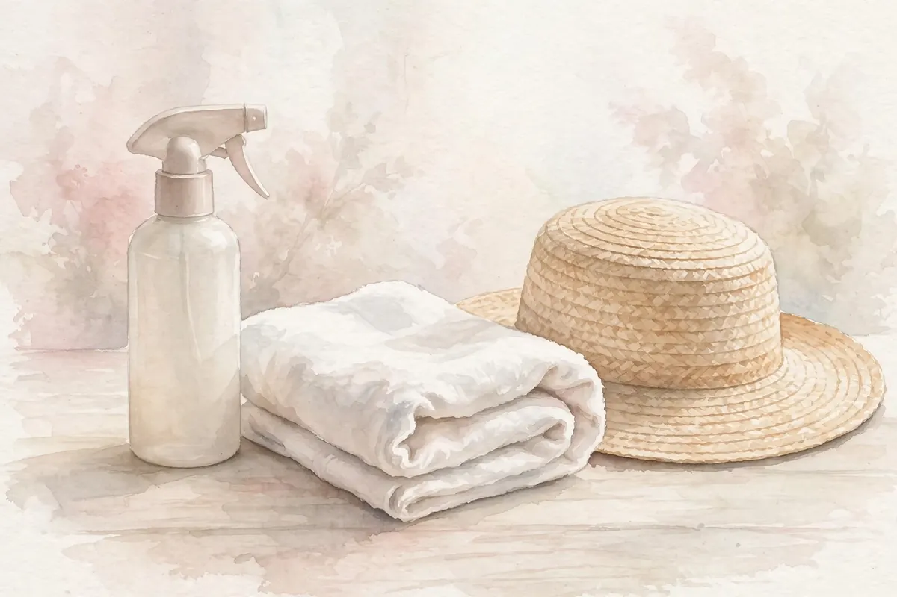

トップ ＞ スキンケア ＞ スプレータイプの日焼け止め、表示の読み方と使い方の段取り
スプレータイプの日焼け止め、表示の読み方と使い方の段取り

スプレータイプの日焼け止めは、手を汚さずに広い範囲へ使えるのが特徴です。施術の現場でも、背中など手の届きにくい場所への使い方を聞かれることがあります。ただ、スプレーだからといって、塗るタイプと同じ感覚で使うと、量の見当がつきにくいところがあります。この記事では、スプレータイプの表示の読み方と、使うときの段取りを整理します。特定の商品の話ではなく、スプレーという形の日焼け止めの使い方の考え方です。
スプレータイプの表示で見るポイント
まず確認したいのは、使い方の案内です。パッケージには「よく振ってから使う」「肌から離してスプレーする」「手でなじませる」といった手順が書かれていることが多いです。缶を振るのは、中身を均一にするためです。振らずに使うと、中身の出方にムラが出ることがあります。使う前によく振る、という一手間が基本になります。
次に、量の目安の書き方です。スプレータイプでは「数秒間スプレーする」「白く残るくらい」といった案内が書かれていることがあります。塗るタイプの「パール粒大」のような、目に見える量の目安がない分、感覚がつかみにくいところです。初めて使うときは、まず表示通りの時間だけスプレーして、手でなじませたあとの肌の感触を確かめてみてください。ムラがあると感じたら、足りない部分に重ねてスプレーします。
顔への使い方も、表示で確認しておきたい点です。顔に直接スプレーするのではなく、「手のひらに出してから塗る」という案内が書かれている商品が多いです。目や口に入らないようにするためです。顔に使う場合は、手に出してから、指でなじませる段取りにします。吸い込まないように、スプレーするときは息を止める、風の向きに注意する、といった案内がある場合もあります。周りに人がいるときは、風下に人がいないかも確認しておきましょう。
使うときの段取り
使うときの段取りは、「振る、離してスプレーする、手でなじませる」の3つです。缶をよく振ってから、肌から10〜15センチほど離してスプレーします。近づけすぎると、一か所に集中してムラになりやすく、離しすぎると風で飛んでしまいます。スプレーしたあとは、手のひらで軽くなじませて、全体に行き渡らせます。背中など手の届きにくい場所は、家族に手伝ってもらうか、届く範囲だけでもなじませておく、という進め方があります。
塗り直しのタイミングも、段取りのうちです。汗をかいたあとや、水に入ったあと、タオルで体を拭いたあとは、塗り直しの目安になります。パッケージに「汗や水のあとは塗り直す」といった案内がある場合は、それに従います。屋外で長時間過ごす日は、塗り直し用のスプレーを1本持ち歩く、という段取りにしておくと安心です。持ち歩くときは、直射日光の当たる場所や高温になる車の中に置きっぱなしにしないようにします。
火気の近くでの使用にも注意が必要です。スプレータイプには可燃性の表示がある商品があり、「火気の近くで使わない」「使用中は火気に近づけない」といった案内が書かれています。屋外でのバーベキューや花火の場面では、使うタイミングと場所を分けておきましょう。使い終わった空き缶の捨て方も、自治体の分別ルールに従います。缶に穴を開けるかどうかも、自治体ごとに案内が違うので、住んでいる地域のルールを確認してください。
保管と使い切りの考え方
スプレー缶の保管は、高温になる場所を避けるのが基本です。夏場の車の中や、直射日光の当たる窓辺に置きっぱなしにすると、缶の内圧が上がることがあります。使い終わったら、直射日光の当たらない涼しい場所で保管し、シーズンごとに使い切る、という考え方が無理のないやり方です。
使い切りの目安は、缶の重さの減り方でもつかめます。使い始めに缶の重さを手で覚えておき、使うたびに軽くなっていく感触を確かめる、という方法があります。前のシーズンに開けた缶が残っている場合は、中身の出方やにおいに変化がないかを確認してから使います。出方が弱くなったり、においが変わったりした場合は、無理に使わずに処分を考えてください。肌に合わない感じがしたときは、使用をいったんやめて、気になる場合は皮膚科などの専門家に相談してください。この記事はスプレータイプの使い方の案内であり、商品ごとに表示がある場合は、そちらが優先です。
セラフィナ「スプレーは手が汚れないのが便利だね。でも顔には直接かけずに、手に出してから塗ってね」

セラフィナ｜美容の道具箱の案内役
「量と表示が分かれば、美容は失敗しない。」——セラフィナと白猫のモコが、買う前のチェックポイントを案内します。綺麗になりたい気持ちに正直に、でも表示は冷静に読むのが、このサイトの約束です。